Microsoft Excel
O Microsoft Excel é uma das mais poderosas ferramentas de manipulação de dados, com qual podemos trabalhar números, valores, datas, moedas, gráficos, operações matemáticas e muito mais.
O Espaço de Trabalho do Excel conta com uma grade de colunas e linhas formando células onde se oculta a página de impressão. As células do Excel vão da A1 (Coluna A, Linha 1), até a célula XFD1048576 (Coluna XFD, Linha 1.048.576), o que dá um total de 2.147.483.648 células (Mais de 2 bilhões de células visíveis).
Nas células do Excel podemos utilizar fórmulas para efetuar cálculos matemáticos e formatações diversas.
Os dados na planilha são postos automaticamente na página de impressão, e quando estes ultrapassam os limites da página são transferidos também automaticamente para a próxima página sem que nada seja alterado na apresentação da planilha.
Visão geral do Excel
Assim como nos outros aplicativos, o Excel possui acima do Espaço de Trabalho a Faixa de Opções com as opções dos nossos menus.

Abaixo do espaço de trabalho temos as guiais onde podemos trabalhar com uma ou mais planilhas simultaneamente, e até mesmo interoperar os dados entre elas.
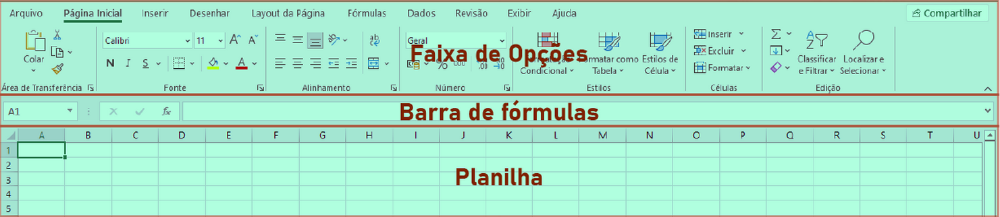Abaixo das guias temos a Barra de Status. A navegação dentro da planilha é feita com o mouse ou por meio das barras de rolagem.
Para aumentar o diminuir o zoom da planilha é possível utilizar a Barra de Zoom no canto inferior direito ou a scroll do mouse com a tecla Control pressionada.
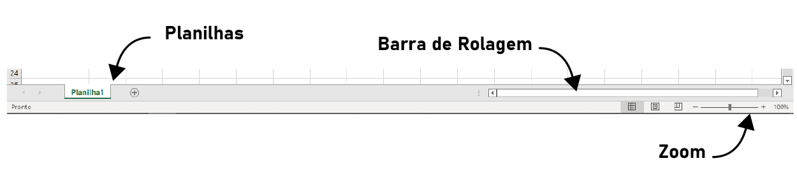Para inserir dados dentro de uma célula basta digitar com a célula selecionada. Para redimensionar as células utilizamos os divisores de linhas e colunas:
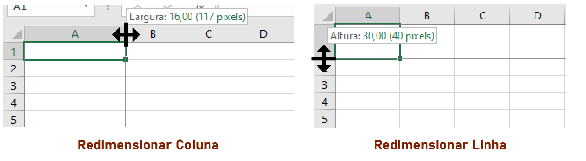Formatação de célula
É possível formatar estilos de caractere e de parágrafo em uma ou mais células de uma planilha da mesma forma como formatamos em outros aplicativos do Office, com apenas algumas características a mais.
No Excel temos opções para mesclar células em linhas, colunas ou em ambas, e definir o alinhamento do conteúdo da célula tanto na horizontal como na vertical. Para tal, no menu Página Inicial, temos a Barra de Fonte e a Barra de Alinhamento, conforme a imagem abaixo.
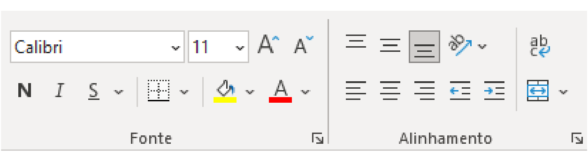Na Barra de Alinhamento, os três primeiros ícones definem o alinhamento vertical do texto, ou seu posicionamento na célula, no topo, no meio ou em baixo. Os dois ícones seguintes, ainda na mesma linha servem para definir a direção do texto de forma que se possa digitar na vertical, e até na diagonal, e o ícone seguinte define a quebra de linha, para que o texto ao chegar ao fim da célula pule de linha automaticamente.
Os ícones da linha de baixo na Barra de Alinhamento servem para definir o alinhamento horizontal (à esquerda, centralizado e à direito), aumentar ou diminuir o recuo do texto em relação à margem esquerda da célula, e o último ícone é utilizado para mesclar células, o que é utilizado com frequência principalmente na formatação de tabelas.
Formatação de número
Para efetuar operações aritméticas básicas numa ou mais células do Excel utilizamos o sinal de igual (=) antes da operação. Ou seja, se você quiser somar 5+5, digitará:
=5+5
E, ao pressionar Enter, o Excel retornará o resultado da operação. No entanto, note que a célula não conterá apenas um texto, apesar deste resultado ser formatável, ele ainda é uma operação matemática, o que você pode verificar na Barra de Fórmulas, que mostra o conteúdo da célula
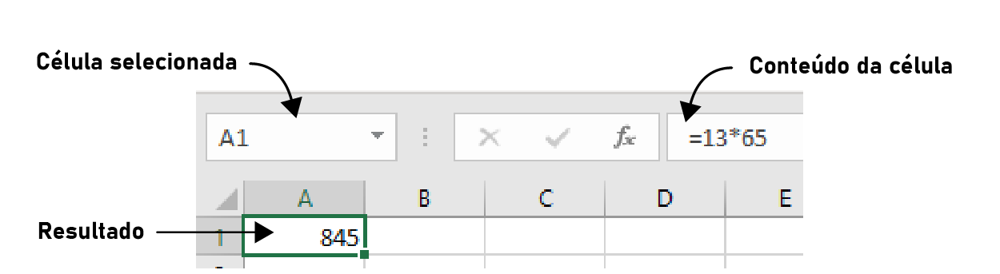Da mesma maneira é possível efetuar operações matemáticas utilizando o conteúdo de outras células, mesmo que elas contenham resultado de outras operações matemáticas, é isso que possibilita o Excel efetuar operações matemáticas das mais complexas.
Para efetuar operações utilizando várias células, utilize o sinal de igual em seguida digite o valor ou clique nas células desejadas.
Ao clicar numa célula ao invés de inserir um valor, o nome da célula é inserido na fórmula no lugar do valor.
Você pode digitar fórmulas utilizando os nomes das células que contenham o valor.
Se você digitar =81/A1, a fórmula dividirá o valor 81 pelo valor contido em A1 (célula da coluna A, linha 1). Caso o valor na célula de destino não seja numérico, a fórmula gerará um erro.
Ao lado da Barra de Alinhamento temos a Barra de Número, por meio dela podemos formatar o conteúdo da nossa célula de maneira mais apresentável sem que isso afete as operações que estamos executando. Por exemplo se quisermos efetuar um cálculo com valores em real (R$), podemos formatar como moeda, de forma que: R$:10,00 + R$:20,00 retorne um valor R$:30,00, ou seja a formatação mantém a apresentação do conteúdo da forma mais adequada, mas não impede que os cálculos sejam efetuados.
É possível formatar números como diversos tipos de moeda, como porcentagem, data, hora, fração, científico entre vários outros, inclusive formatações personalizadas. É possível ainda configurar separador de milhares e casas decimais.
Formatação de Tabelas
Ao trabalharmos com muitos dados, ou com listas de dados, muitas vezes desejaremos organizá-los em tabelas, para isso o Excel possui recursos especiais para formatação de tabelas, e inclusive para conversão dos dados de uma tabela em um gráfico.
Observe a tabela abaixo, nela temos algumas das formatações que aprendemos até agora, o título está numa célula que foi mesclada das duas colunas, a tabela possui um estilo e os números foram formatados como moeda:
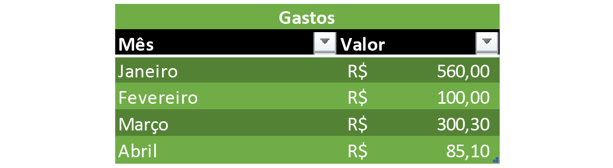No exemplo simples de tabela acima temos um conjunto de dados nome-valor, onde a coluna da esquerda possui os nomes e a da direita os valores. Nesse caso, os nomes referem-se ao mês e os valores são os gastos daquele mês. Foi aplicado a essa tabela um Estilo de Tabela, da Barra de Estilos do Excel. Note que ao aplicarmos o estilo o Excel já reconhece o conjunto de dados como uma tabela, fornecendo para nós, logo ao lado dos títulos um menu suspenso onde podemos classificar ou filtrar nossos dados.
Você pode adicionar filtros às suas tabelas clicando na opção Classificar e Filtrar que se encontra na Barra de Edição no menu Página Inicial. Caso não queira aplicar um estilo de tabela pré-formatado. O filtro classificará ou filtrará toda a sequência de dados na linha abaixo.
Linhas e Colunas
Ao criarmos uma tabela, talvez seja necessário incluir mais uma coluna, ou mais uma linha, ou até mesmo excluir as já existentes, temos duas formas de fazê-lo:
☛ Clicando com o botão direito sobre o número da linha ou sobre a letra da coluna e selecionando Excluir ou Inserir.
☛ Ou utilizando os campos Inserir, Excluir e Formatar, logo ao lado da Barra de Estilos.
Numa tabela podemos ainda trabalhar com repetição de valores ou sequência. Ao clicarmos numa célula, ou selecionarmos várias células, podemos notar que a seleção possui um ponto no canto inferior direito, esse ponto é a alça de repetição.
Ao selecionarmos um grupo de células com números aleatórios, ou texto, essa alça permite repetir o conteúdo daquelas células quantas vezes desejarmos apenas clicando sobre a ela e arrastando. Se selecionarmos uma sequência como 1,2,3 ou 7,11,15 a alça serve para inserirmos o restante da sequência até o ponto que desejarmos.
Gráficos
Dados e tabelas de uma planilha podem ser utilizados para gerar gráficos. O Excel conta com diversos tipos de gráficos prontos para utilizarmos, gráficos de barras, de linhas, de pizza entre muitos outros.
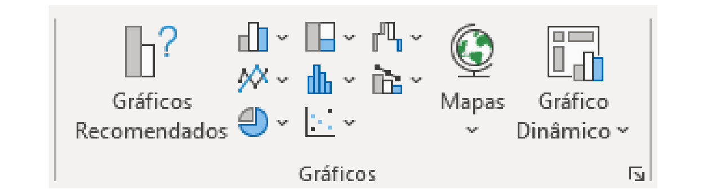A imagem acima mostra a Barra de Gráficos existente no menu Inserir, na qual podemos inserir gráficos utilizando os dados de nossa planilha. Clicando no ícone de seta no canto inferior direito desta barra podemos acessar todas as opções de gráficos existentes no Excel, como mostrado na imagem a seguir.
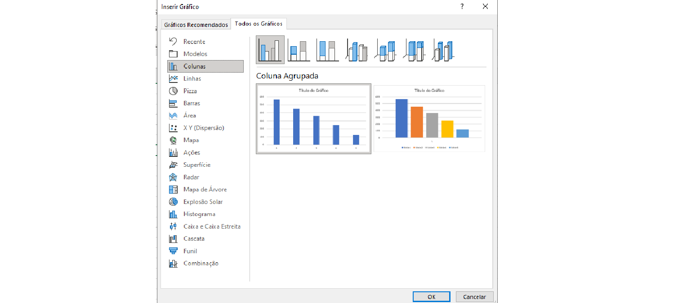O gráfico abaixo é um modelo simples de fatias com apenas uma série de dados, recolhidos da coluna Valor de nossa tabela.
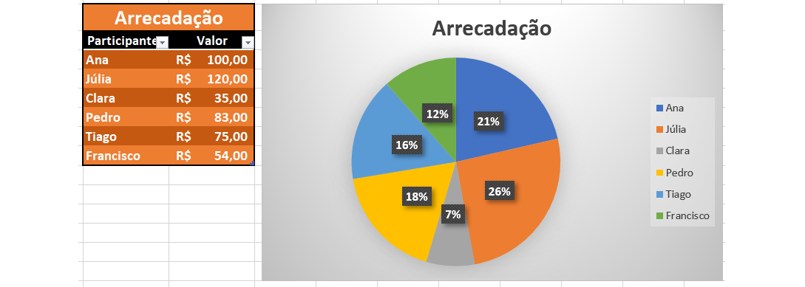Para gerar um gráfico a partir de uma tabela, tenha em mente que uma coluna possuirá os nomes e a outra, os valores. A coluna com os valores será a série de dados utilizados no gráfico. O título do gráfico deve estar na célula acima dos valores.
Tendo isto em mente, siga estes passos:
1. Clique com o botão direito do mouse sobre um dos valores e selecione Classificar, em seguida, Classificar do Maior para o Menor. Isso fará com que a primeira fatia da pizza seja a maior e a última a menor, facilitando a leitura dos dados.
2. Clique sobre um dos valores.
3. Clique no menu Inserir.
4. Na Barra de Gráficos clique no ícone Inserir Gráfico de Pizza.
5. Selecione a primeira opção.
6. Para escolher outro estilo para o seu gráfico clique no menu Design do Gráfico.
7. Agora você pode formatar também a tabela caso queira.
Podemos ainda criar gráficos com mais de uma série de dados, para isto, basta que separemos os valores de cada série em colunas diferentes. Observe o gráfico abaixo e veja que agora para cada nome na coluna Participantes temos três séries de dados, Mês 01, Mês 02 e Mês 03, que são exibidos no gráfico de barras ao lado.
O processo de criação é o mesmo e o Excel reconhece automaticamente tantos as séries de dados quanto os nomes associados a elas. A única diferença é que para o gráfico inserir um título automático, o mesmo deve estar na célula acima da última série de valores. Depois do gráfico criado é possível formatar a tabela livremente.
Veja abaixo o resultado almejado:
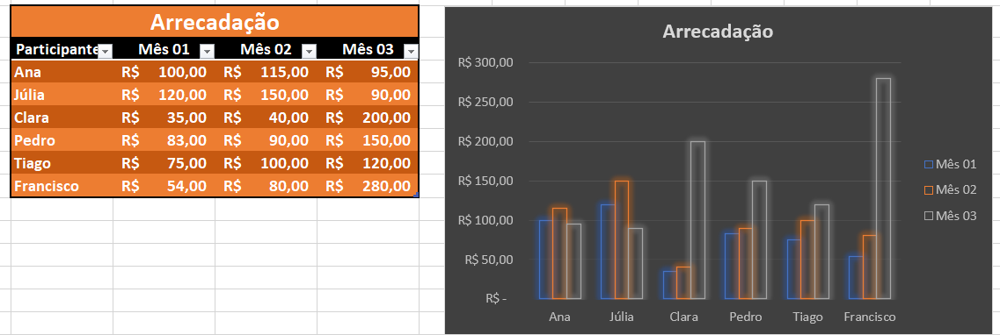Básico sobre Formatação Condicional
A formatação condicional é utilizada para formatar as células caso uma ou mais condições sejam satisfeitas nos dados contidos nelas.
Para aplicar uma formatação condicional basta selecionar as células ou a série de dados desejada e clicar em Formatação Condicional, na Barra de Estilos do menu Página Inicial, e escolher o tipo de formatação desejada.
Por exemplo, se a célula contiver determinada informação ou se um dado contido na célula for maior ou menor que determinado valor, um estilo é aplicado. Para utilizarmos, devemos especificar Regras de Formatação Condicional.
Podemos especificar formatações condicionais com base em:
Regras de Realce: Realça células com uma formatação personalizada cujo conteúdo seja maior ou menor, igual a, ou contenha determinado valor.
Regras de Primeiros/Últimos: Realça as primeiras ou últimas células com base em seus valores, as células que contenham um intervalo de valores inicial ou final, ou as células que estejam acima ou abaixo da média geral da série de dados da tabela, com uma formatação personalizada.
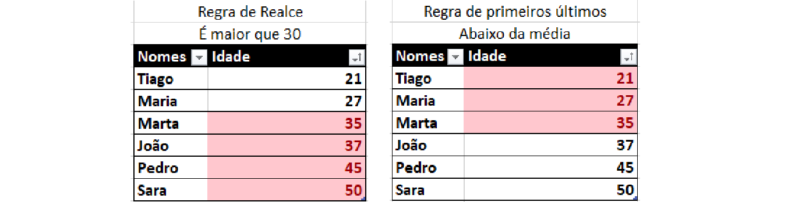Barras de Dados: Insere barras de dados em escala nas células com base no valor contido nelas e num intervalo de início e de fim para este intervalo.
Escalas de Cor: Realça células com uma gradação personalizada de cores com base nos valores contidos nelas.
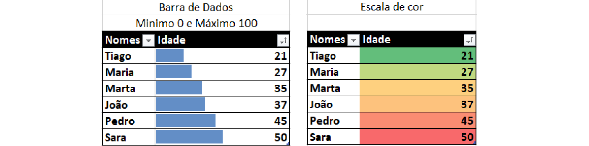Ícones: Insere ícones personalizados para cada intervalo de valor contido nas células.
Regras personalizadas: Podemos ainda aplicar regras personalizadas definindo conteúdos condicionais ou intervalos de acordo com a necessidade, podemos até mesmo criar fórmulas para definir quais células devem receber a formatação especial.